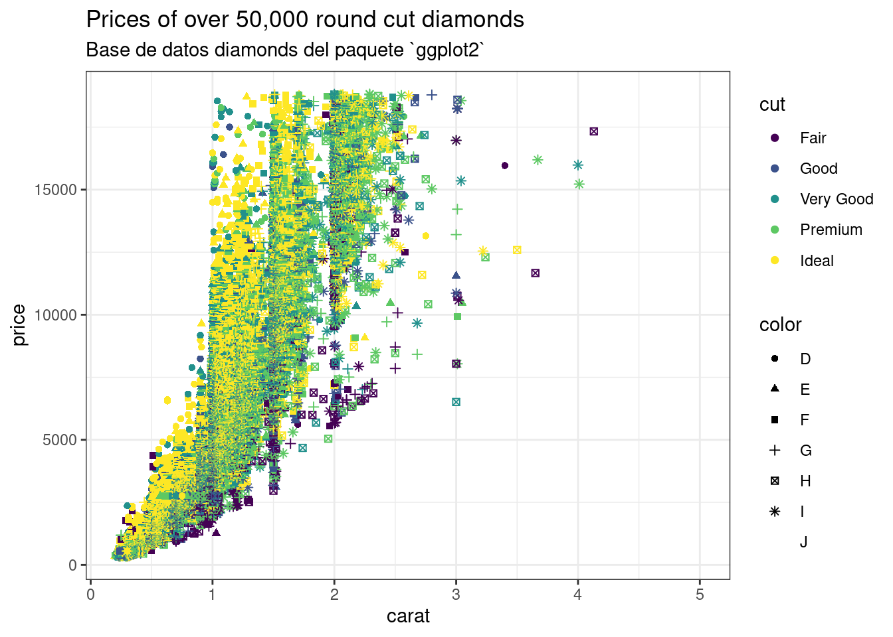

# Invocamos y ejecutamos el script 'ejemploScript.R'
source(
here::here(
'R', 'ejemploScript.R'
)
)Scripts de R
La asignación de variables permite ir guardando los resultados que vamos obteniendo en el análisis, pero no guarda los pasos del análisis mismo.
Si tenemos clara la secuencia de órdenes que vamos a utilizar para realizar un determinado análisis, podemos escribirlas en una ‘receta’ (script) y ejecutarla posteriormente. Esto tiene algunas ventajas respecto al enfoque interactivo:
- No tenemos que reescribir el código cada vez que queramos ejecutar una misma tarea
- Podemos revisar y documentar el proceso seguido desde los datos a las conclusiones
- Podemos compartir este código con otros usuarios, para que puedan reproducir nuestros análisis sobre un mismo conjunto de datos
Podemos utilizar dos enfoques para los scripts:
- Scripts sencillos, que sólo contienen código
- Scripts avanzados, que contienen texto, código, lenguaje \(\LaTeX\), elementos interactivos, etc (literate programming (Knuth 1984))
Scripts sencillos de R. Archivos .R
Si queremos utilizar el script únicamente para almacenar una secuencia de instrucciones de R, podemos utilizar los scripts básicos, los archivos .R
- Son archivos de texto plano con la extensión
.R - Se puede incluir tanto código de R como comentarios, para facilitar la comprensión del código.
- Los comentarios se delimitan con una almohadilla
#. Todo lo que se escriba después de la almohadilla en esa línea no será ejecutado ni evaluado.
BÁSICO - Crear un script.
Podemos crear un script con Ctrl + Shift + N, desde el menú Archivo>Nuevo Archivo > R script o pulsando el botón de Nuevo Archivo > R Script
Es conveniente que asignemos el nombre del script y lo grabemos en su ubicación definitiva justo en el momento de la creación. Así mantendremos el orden en el proyecto.
Si no tenemos una ubicación mejor, le daremos un nombre y lo guardaremos en la carpeta R, dentro de la carpeta de nuestro proyecto.
Puede verse un ejemplo en la carpeta R, denominado ejemploScript.R
BÁSICO - Cargar y ejecutar un script (Método 1). Interactivo
Podemos cargar un script pulsando Ctrl+O, desde el botón ‘Abrir un archivo existente’ o desde el menú Archivo > Abrir archivo..., en el menú principal de R Studio.
Una vez cargado, deberemos ejecutarlo pulsando el botón ‘Source’, o pulsando Ctrl+Shift+S
AVANZADO - Cargar y ejecutar un script (Método 2). Función
source()
Para invocar un script desde la terminal, utilizamos la función source(), indicando la ruta del archivo entre comillas.
Este método es el que utilizaremos cuando queramos incluir la invocación de un script desde dentro de otro script.
Si estamos utilizando proyectos de R Studio, la ruta debe indicarse desde el directorio en el que está el fichero con extensión .Rproj
Podemos gestionar con más facilidad las rutas de los archivos con la función here() del paquete here
Una vez cargado y ejecutado un script, los objetos definidos en el mismo están disponibles para el script desde el que se ha invocado. Por ejemplo, podemos mostrar el gráfico g que se crea en el archivo ejemploScript.R
# Invocamos el objeto 'g' que se crea en el script 'ejemploScript.R'
g
Scripts avanzados. Ficheros .rmd (R Markdown) y .qmd (Quarto)
Si queremos utilizar el script tanto para ejecutar el código de R, como para generar un informe del análisis, podemos utilizar los scripts avanzados, como los ficheros .rmd (R Markdown) o su versión más reciente, los archivos .qmd (Quarto):
- Los archivos
.rmd(R Markdown) y.qmd(Quarto) permiten incluir, además del código, diferentes elementos en los documentos, como texto, imágenes, código, gráficos… - A partir de ellos, pueden generarse diferentes formatos de salida: ficheros PDF, ficheros de word, archivos de powerpoint o páginas web.
- También se puede insertar código \(\LaTeX\) en el documento, para incluir fórmulas matemáticas con toda la complejidad que sea necesaria. Por ejemplo:
\[ \begin{equation*} 1-\binom{n}{1}\frac{1}{2}+\binom{n}{2}\frac{1}{2^2}-\dotsb -\binom{n}{n-1}\frac{1}{2^{n-1}}=0 \end{equation*} \]
El material de este curso está elaborado íntegramente en formato libro de Quarto.
BÁSICO - Crear un documento
.qmd (Quarto).
Los scripts de Quarto son archivos de texto plano con la extensión .qmd
Podemos crear un script, desde el menú Archivo > Nuevo Archivo > Documento Quarto o pulsando el botón de Nuevo Archivo > Documento Quarto
Es conveniente que asignemos el nombre del script y lo grabemos en su ubicación definitiva justo en el momento de la creación. Así mantendremos el orden en el proyecto.
Si no tenemos una ubicación mejor, le daremos un nombre y lo guardaremos en la carpeta notebooks, dentro de la carpeta de nuestro proyecto.
BÁSICO - Cargar un script
.qmd (Método Interactivo)
Podemos cargar un script pulsando Ctrl+O, desde el botón ‘Abrir un archivo existente’ o desde el menú Archivo > Abrir archivo..., en el menú principal de R Studio.
BÁSICO - Generar la salida de un fichero
.qmd (Método Interactivo)
Los archivos .qmd pueden generar las salidas prefijadas en su cabecera yaml.
Puede crearse una salida pulsando el botón ‘Render’
BÁSICO - Identificación de elementos en los archivos
.qmd y .rmd
Al abrir un documento .qmd o .rmd, podemos identificar los siguientes elementos:
| Elemento | Identificación |
|---|---|
| Cabecera | Situada al inicio del documento, delimitada por tres guiones --- al inicio y al final de la misma |
| Texto | Texto plano, con o sin formato. Constituye el elemento narrativo del informe |
| Títulos | Se identifican porque comienza con una o más almohadillas #. El número de almohadillas determina el nivel de indentación del título |
| Código | Delimitado por ```{r} antes del código, y ``` tras el código |
| \(\LaTeX\) | Delimitado por $$ al inicio y al fin del código \(\LaTeX\) |
Cuando editemos estos archivos, es muy importante no modificar los delimitadores de inicio y fin de cada elemento. Si los borramos, alteraremos el modo en que R interpreta dicho texto, y tendremos resultados inesperados.